FreeLLMAPI가 하는 일과 설치
FreeLLMAPI는 여러 회사의 무료 LLM(Large Language Model) API(Application Programming Interface)를 하나로 묶어 주는 앱이에요. 저장소 소개에는 "한 달 74억 토큰, 무료 제공자 34곳, 무료 모델 엔드포인트 635개"라고 적혀 있어요. 영상 제목의 70억 토큰은 이 숫자를 둥글게 말한 거예요.
아래 그림 가운데 동그란 아이콘이 FreeLLMAPI이고, 바깥 원에 Google·Groq·Mistral·OpenRouter·NVIDIA·Cloudflare가 둘러서 있어요. 오른쪽 큰 숫자 34가 묶을 수 있는 무료 제공자 수예요.

한도에 걸리면 다음 제공자로
발표자가 강조하는 건 자동 전환이에요. Claude Code나 Codex 사용량이 바닥나면 FreeLLMAPI가 쓸 수 있는 무료 모델로 요청을 돌려요. 그 무료 제공자의 한도마저 차면 또 다음 제공자로 넘겨요. 이때 앞 모델과 나눈 대화 맥락도 같이 넘겨 줘서, 키를 직접 갈아 끼우거나 모델을 바꿀 일이 없어요.
아래 화면은 이 구조를 한 장으로 보여 줘요. 왼쪽 네 개 로고(Google, Groq, OpenRouter, NVIDIA)에서 나온 선이 오른쪽 FreeLLMAPI 하나로 모여요. 이 네 곳이 뒤에서 발표자가 실제로 키를 등록하는 제공자예요.
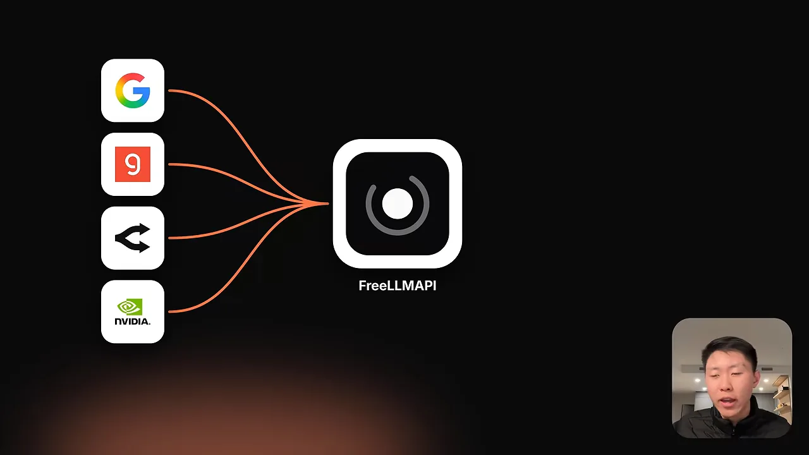
설치와 첫 화면
설치는 저장소 Releases에서 운영체제에 맞는 파일을 받으면 돼요. 아래 Assets 목록 맨 위의 FreeLLMAPI-0.16.11-arm64.dmg(113MB)가 Apple Silicon Mac용이고, 발표자도 이걸 받았어요.
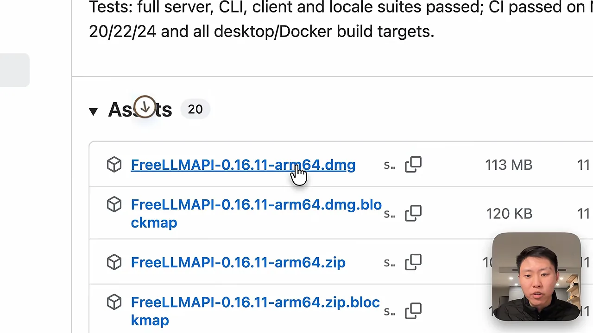
앱을 열면 상단 메뉴가 Models, Playground, Keys, Agents로 나뉘어요. Models에는 채팅뿐 아니라 이미지·영상 모델도 있어요. Playground는 연결한 모델과 바로 대화해 보는 곳이라, 에이전트 없이 간단한 채팅 창으로만 써도 돼요. Keys에서는 제공자 키를 관리하고, Agents에는 OpenCode·Qwen Code·Codex·Claude Code 같은 도구에 붙이는 명령이 모여 있어요. 명령을 복사해 터미널에서 돌리면 연결이 끝나요.
Models 첫 화면의 시작 안내는 세 단계예요. 제공자 키를 추가하고, Playground에서 인사를 보내 보고, 다른 도구에 연결하는 순서예요.
어떤 무료 제공자를 골라야 할까요?
어떤 무료 API가 있는지는 다른 저장소 mnfst/awesome-free-llm-apis에 정리돼 있어요. 아래 화면 제목 밑에 "텍스트 추론용 영구 무료 티어가 있는 LLM API"라고 범위가 적혀 있어요. 따로 표시가 없으면 모두 OpenAI SDK(Software Development Kit)와 호환되고, 각 링크는 제공자의 API 키 발급 페이지로 이어져요.

선택지가 많은 만큼 고르는 게 중요해요. 발표자의 경고는 이래요. 무료로 풀린 모델은 대부분 낮은 등급이라, 잘못 고르면 결과물이 엉성해서 되돌리는 데 시간을 더 쓰게 돼요. 안정성이 떨어지는 제공자도 마찬가지예요.
네 기준으로 비교한 표
발표자는 Claude Code에게 목록 전체를 모아 분석해 달라고 했어요. 결과는 제공자마다 가장 좋은 무료 모델, 똑똑함(지능 지수), 속도, 안정성, 무료 한도를 한 줄씩 적은 표예요. 아래 화면에서 굵게 표시된 칸이 각 줄의 강점이에요. Groq는 속도 471 tokens/s와 가동률 100%, Gemini는 지능 지수 40.9, NVIDIA NIM(NVIDIA Inference Microservices)은 "일일 한도 없음"이에요.
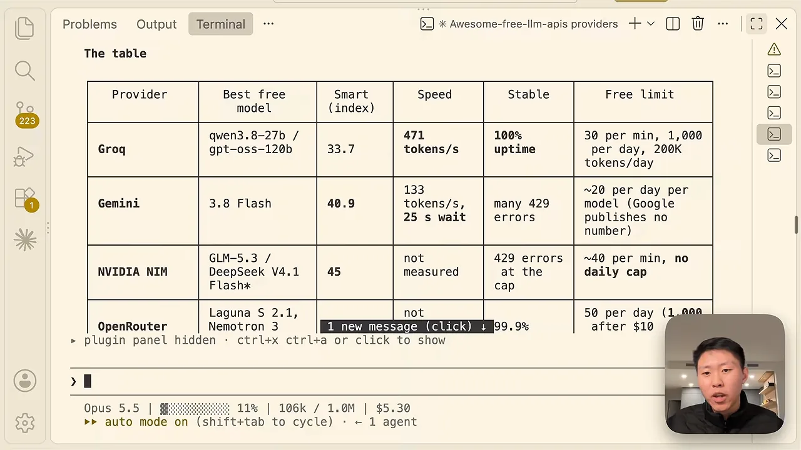
화면 글씨가 작아서 위쪽 세 줄을 옮겨 적었어요.
| 제공자 | 대표 무료 모델 | 지능 지수 | 속도 | 안정성 | 무료 한도 |
|---|---|---|---|---|---|
| Groq | qwen3.8-27b / gpt-oss-120b | 33.7 | 471 tokens/s | 가동률 100% | 분당 30회, 하루 1,000회, 하루 20만 토큰 |
| Gemini | 3.8 Flash | 40.9 | 133 tokens/s, 25초 대기 | 429 에러 잦음 | 모델당 하루 약 20회 (Google은 숫자를 공개하지 않음) |
| NVIDIA NIM | GLM-5.3 / DeepSeek V4.1 Flash | 45 | 측정 안 함 | 한도에서 429 에러 | 분당 약 40회, 일일 한도 없음 |
NVIDIA 줄에는 별표가 붙어 있어요. 표 아래 주석에 따르면 두 모델은 NIM에 올라와 있지만 무료로 제공되는지는 확인하지 못했고, 무료가 확인된 건 Nemotron 3 Ultra(지능 지수 22.9)예요.
순위와 최종 네 곳
표 아래에는 기준별 순위가 이어져요. 아래 화면에서 파랗게 칠한 부분이 발표자가 짚은 "똑똑함" 상위 셋, NVIDIA·Gonka·Gemini예요. 맨 아래 Best all-round 줄이 최종 결론이에요.
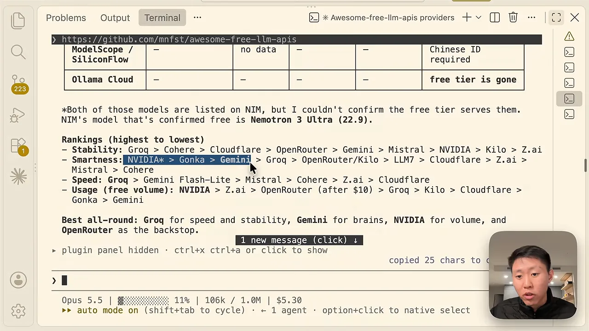
| 기준 | 1위 | 2위 | 3위 |
|---|---|---|---|
| 안정성 | Groq | Cohere | Cloudflare |
| 똑똑함 | NVIDIA | Gonka | Gemini |
| 속도 | Groq | Gemini Flash-Lite | Mistral |
| 무료 물량 | NVIDIA | Z.ai | OpenRouter (10달러 충전 후) |
이 순위에서 발표자가 뽑은 조합을 역할별로 그려 보면 아래와 같아요. 네 곳이 같은 일을 나눠 맡는 게 아니라, 각자 잘하는 쪽을 하나씩 맡아요.
키 네 개를 등록하고 약한 모델 끄기
네 제공자 모두 순서가 같아요. 제공자 사이트에서 API 키를 만들고, FreeLLMAPI의 Keys에서 Add key를 눌러 제공자를 고른 뒤 키를 붙여 넣어요. 그다음 뜨는 모델 선택 창에서 무엇을 끌지가 이 영상에서 가장 공들이는 부분이에요.
Gemini: 약한 모델부터 끄기
아래는 Add key 창이에요. 왼쪽 Platform 검색창에 "goo"를 치면 Google AI(Artificial Intelligence) Studio가 나와요. 오른쪽 API key 칸에는 AI Studio에서 Get API key → Create key로 만든 키(이름은 FREELLMAPI)를 붙여 넣어요.
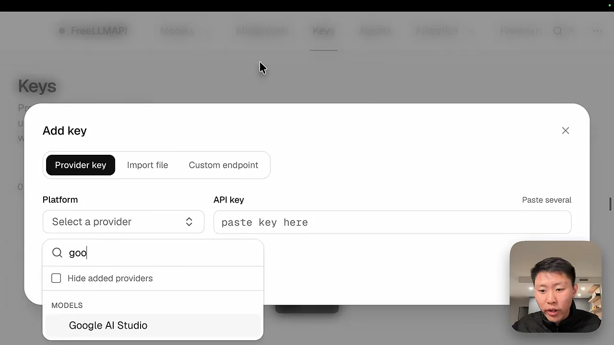
키를 추가하면 "이 키로 어떤 모델을 쓸까요?"라는 창이 뜨고, 기본으로 전부 체크돼 있어요. 발표자는 여기서 꼭 손을 대라고 해요. 아래 그림처럼 체크를 풀어 둔 모델은 라우터가 건너뛰어요.
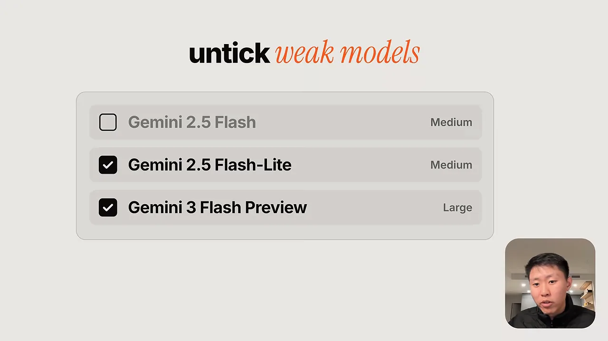
무엇을 끌지는 Claude에게 물었어요. 답은 15개 중 7개를 끄고 8개를 남기라는 거였어요.
| 끈 모델 | 이유 |
|---|---|
| Gemini Robotics-ER 2 Preview | 로보틱스용이라 코딩에 맞지 않아요 |
| Gemma 4 31B IT(Instruction-Tuned), Gemma 4 26B IT | 컨텍스트가 33K뿐이라 Claude Code 프롬프트만으로도 거의 차요 |
| Gemini 3 Flash Preview, Gemini 3.1 Flash Lite Preview | 새 버전이 나온 옛 프리뷰라 예고 없이 멈출 수 있어요 |
| Gemini Flash (latest), Gemini Flash Lite (latest) | 별칭이라 이미 목록에 있는 3.8 Flash와 Lite를 가리킬 가능성이 커요 |
저장한 뒤 Playground에서 "hi"를 보내 봤어요. 아래 화면처럼 답 밑에 실제로 답한 모델(gemini-3.1-flash-lite)과 걸린 시간(14,897ms)이 같이 나와요. 라우터가 어느 모델로 보냈는지 여기서 확인할 수 있어요.
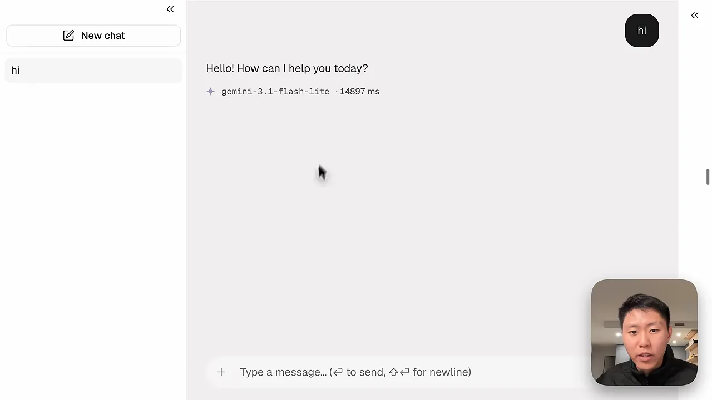
Groq: 프런티어 모델 하나만
Groq는 console.groq.com의 API Keys에서 키를 만들어요. 등록하면 모델 7개가 뜨는데, 빠르지만 작고 약한 모델이 대부분이에요. 아래 화면의 Claude 답변이 Keep과 Untick으로 나뉘어 있어요. 남긴 건 Qwen3.8 27B 하나예요. Groq에서 유일한 프런티어급이고 컨텍스트가 262K, 지능 점수가 33.7이에요.
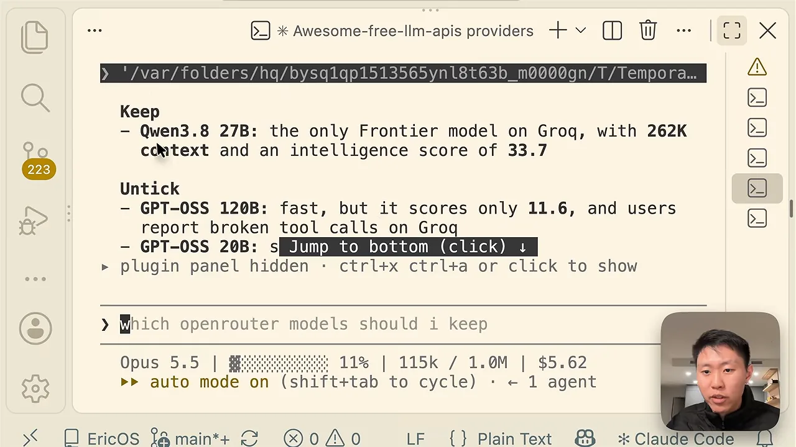
발표자는 컨텍스트 윈도우를 특히 강조해요. 긴 코드나 큰 문서를 모델이 한 번에 받지 못하면 그 작업은 아예 안 돌아가요. Claude Code처럼 프롬프트 자체가 긴 도구에서는 더 그래요.
OpenRouter: 코딩용 하나만
OpenRouter에서는 API Keys에서 키를 만들 때 만료 없음, 크레딧 한도 없음으로 설정했어요. 등록하면 무료 모델 10개가 뜨고, 이번에도 하나만 남겼어요. 아래 화면 첫 줄이 결론이에요. Poolside Laguna S 2.1을 남기고 나머지 9개는 꺼요.
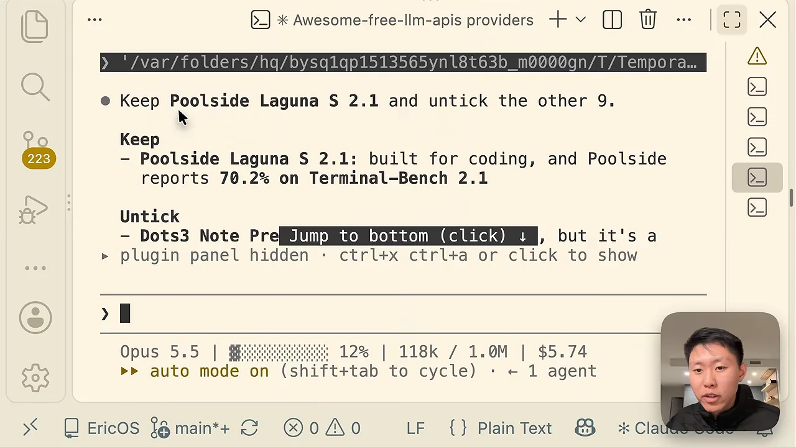
NVIDIA: 키 받는 곳이 조금 달라요
NVIDIA는 build.nvidia.com에 로그인해 NVIDIA 클라우드 계정을 만든 뒤, 아무 모델 페이지에서 키를 받아요. 발표자는 GLM(General Language Model)을 검색해 z-ai/glm-5-3 페이지를 열었어요. 아래 화면 코드 블록 오른쪽 위의 Generate API Key 버튼이 키 발급 버튼이에요.
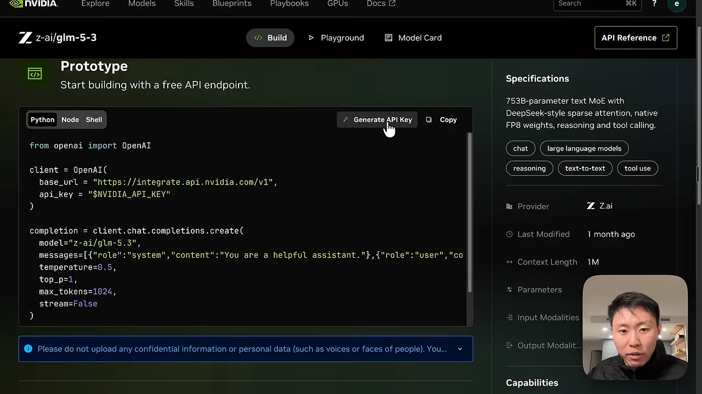
FreeLLMAPI에 키를 넣은 뒤 남긴 모델은 Nemotron 3 Ultra 하나예요. 컨텍스트가 100만이고 NVIDIA 쪽에서 가장 좋은 모델이라는 이유예요. 앞 섹션 표의 주석에서 무료 제공이 확인된 NVIDIA 모델도 이것이었어요.
auto로 두면 앱이 골라요
Playground 오른쪽 설정에서 모델을 직접 고를 수도 있고, auto로 둘 수도 있어요. 아래 그림처럼 auto는 작업을 받아 남겨 둔 모델 중 하나로 보내요. 이 그림에서는 Nemotron 3 Ultra가 선택됐어요.
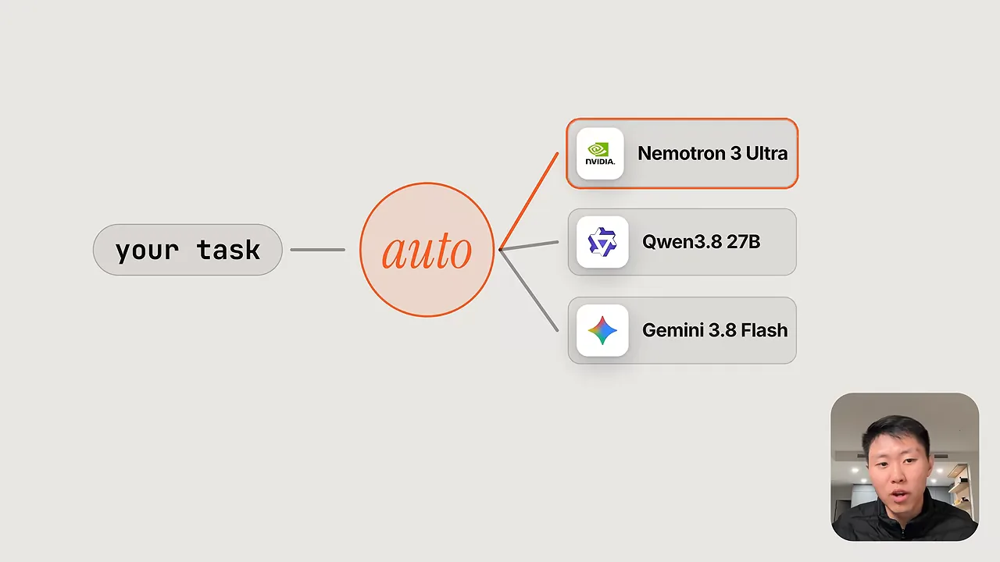
발표자는 Nemotron 3 Ultra를 직접 골라 "Rust로 이진 탐색을 써 줘"라고 시켰어요. 반복·재귀 버전과 표준 라이브러리 partition_point를 쓰는 변형까지 답이 왔어요.
Claude Code에 붙이기: claude-free 명령
Agents 화면에는 도구마다 연결 방법이 두 가지 있어요. 아래 화면에서 Claude Code 카드의 Automatic setup은 설정 파일을 대신 써 주는 명령이고, Manual connection은 직접 넣을 BASE_URL과 API_KEY 값이에요. 맨 위 Quick start에도 같은 자동 설정 명령이 있어요.
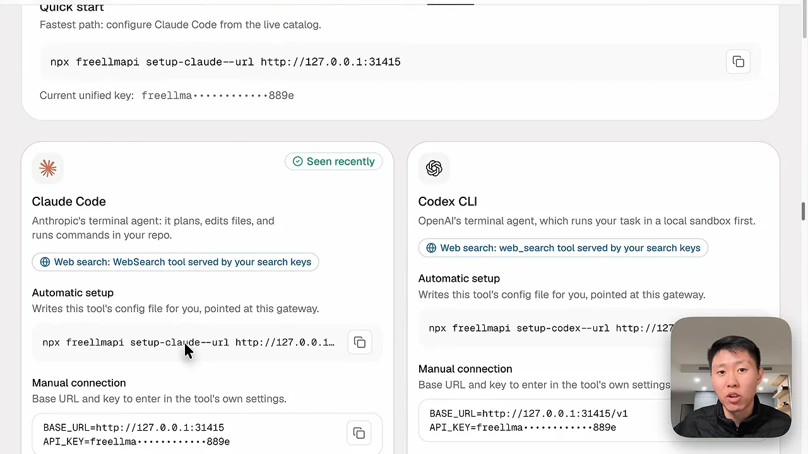
http://127.0.0.1:31415, Codex CLI(Command-Line Interface)는 끝에 /v1이 붙은 주소를 써요. 영상 13:17에서 보기claude 대신 claude-free
자동 설정은 claude 명령 자체가 FreeLLMAPI를 부르도록 바꿔요. 발표자는 이게 싫었어요. 평소 Claude Code는 그대로 두고, 무료로 돌릴 때만 따로 부르고 싶었던 거예요. 그래서 Claude Code에게 API 키, base URL, 환경 변수 값을 주고 claude-free라는 명령을 만들어 달라고 했어요.
아래 그림이 그 결과예요. 터미널에서 claude-free를 치면 http://127.0.0.1:31415를 가리키는 Claude Code가 떠요.
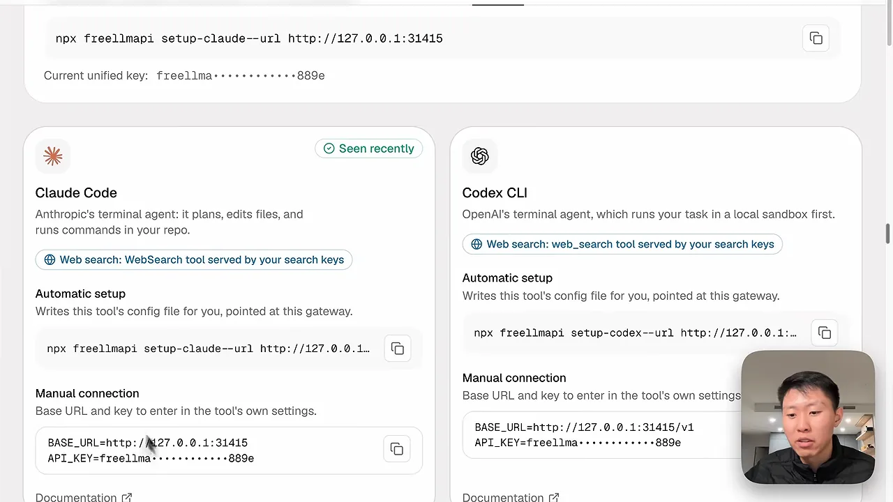
source ~/.zshrc 후 실행이에요. 영상 13:44에서 보기제대로 붙었는지 확인하기
실행하면 화면 아래에 여전히 Opus 5.5라고 나와요. 발표자는 설정 파일에 적힌 모델 이름일 뿐이니 신경 쓰지 말라고 해요. 실제 행선지는 /status에서 봐요. 아래 화면의 Anthropic base URL 줄이 http://127.0.0.1:31415이고, Auth token 줄은 ANTHROPIC_AUTH_TOKEN이에요.
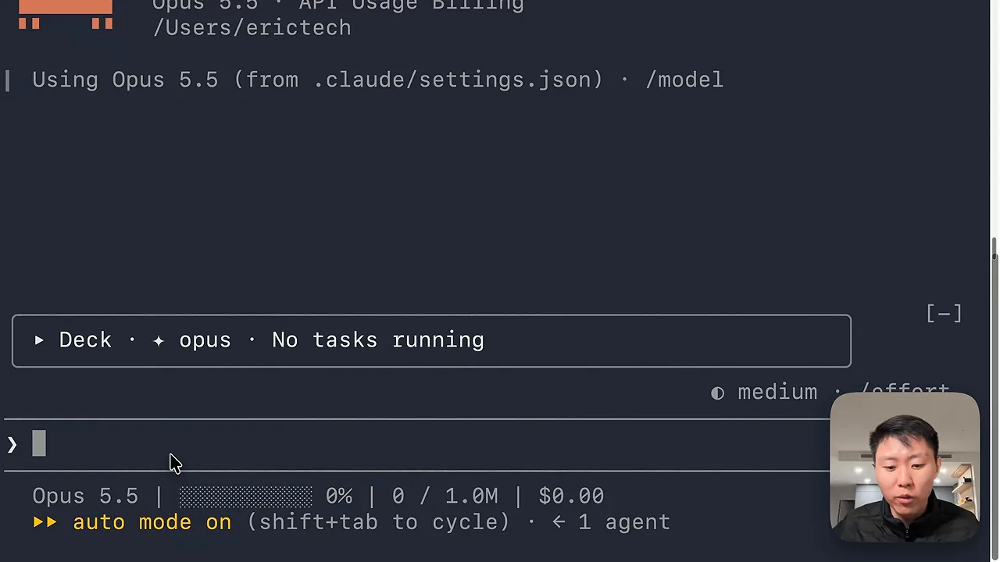
"hi"를 보내니 13초 동안 생각한 뒤 인사가 돌아왔어요. 아래 화면 가운데 Thought for 13s 줄이에요.
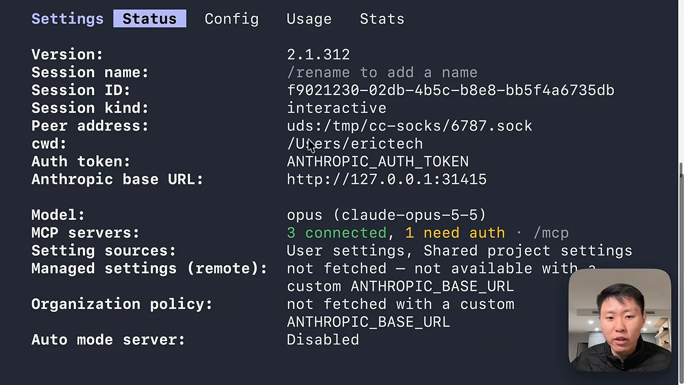
Codex CLI나 DeepSeek Harness 같은 다른 하네스도 방법이 같아요. Agents 화면에서 해당 도구의 base URL과 API 키를 넣고, 실제로 그 주소를 부르는지 확인하면 돼요.